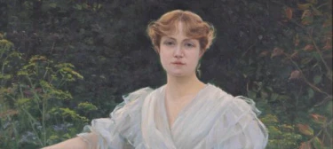
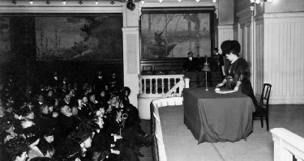
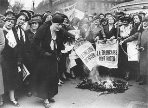

Marguerite Durand
Journaliste féministe
Marguerite Durand est considérée comme une des premières féministes de France. De sa naissance à un parcours personnel et professionnel riche en émotions, à une icône du féminisme en France utilisant la presse comme un moyen de diffuser la pensée Féministe.
Biographie

Marguerite Charlotte Durand naquit le 24 janvier 1864 et mourut le 16 mars 1936 à Paris. Elle fut élevée dans le couvent des Dames Trinitaires, et réalisa ses études au même endroit avant de rentrer au Conservatoire de Paris en 1879 où elle reçut le premier prix de comédie en 1880.
C’est ainsi qu’elle intégra par la suite l’Académie-Française en 1881. Par la suite elle eut un enfant hors-mariage avec Antonin Périvier, le co-directeur du Figaro le 14 aout 1986.
Il essaya de lui enlever son enfant, et Marguerite dût faire un appel à l’aide à Georges Clemenceau pour récupérer son enfant des mains de son mari.
Parcours professionnel
Une vocation
Le parcours professionnel et son combat dans le féminisme débutèrent d’une drôle de manière. En 1888 elle décida d’arrêter sa carrière d’actrice pour se marier à Georges Laguerre, un avocat et député boulangiste. De cette union découlera la vocation future de Marguerite Durand.
Grâce à son mari député, elle assista à des conférences et des rassemblements politiques et journalistiques. Par la suite, elle travailla en tant que journaliste dans le journal La Presse, un journal propagandiste boulangiste dirigé par son époux.
Finalement elle se séparera de son mari Georges Laguerre en 1895 et décidera d’entamer sa carrière de journaliste en rentrant dans le Figaro, un journal quotidien Français.
Son combat pour le féminisme
Travaillant pour le Figaro, elle fut envoyée de nombreuses fois à des conférences, congrès pour rédiger des articles sur ce qui s’est dit et passé. En avril, 1896, le Figaro l’enverra une nouvelle fois à un congrès. Cependant cette fois ci dans le but d’écrire un article mensonger à l’égard de ce congrès, qualifiant leurs discours de malveillants, dont le but était de diviser la population. Elle se rendit donc à ce congrès avec la mission d’écrire un article critique ayant pour but de désinformer la population. Lorsqu’elle assista à la conférence elle s’étonna de la cohérence et de la profondeur des discours.
La décision
Marguerite, par suite de cela décida de ne rien écrire à propos de ce congrès. En revanche, il lui vint une idée de créer un journal dirigé, écrit par des femmes et pour les femmes pour enfin donner de la visibilité sur le travail des femmes.
On ne sait rien de l’admirable activité des femmes, et même les féministes ignorent les trois quarts de ce qu’ont fait’’
Création du journal
C’est ainsi qu’est né en 1897 le journal La Fronde, mettant en avant des articles parlant des femmes, recueillant leurs opinions, témoignages sur le système, la politique, le sport… etc. Marguerite Durand lutta tout le long de sa carrière de journaliste pour obtenir le droit de vote pour les femmes. En parallèle, elle créa un autre journal nommé « les Nouvelles » en 1909 avec comme objectif de se battre pour le droit de vote pour les femmes. Marguerite Durand enchaîna les combats pour cette cause et l’amélioration des droits des femmes, essuyant parfois des défaites mais faisant avancer l’opinion public sur l’importance des femmes dans la société.
Ce qu'il faut retenir
Marguerite Durand fut la première femme à vouloir armer son mouvement du journalisme, pour se battre auprès de la population et contre l’Etat et ainsi avoir plus d’influences, impact sur les décisions politique et sociales à venir. Malgré les défaites elle continua à prôner que le féminisme et le pacifisme sont étroitement liés. Elle décida finalement à la fin de sa vie de léguer toute la documentation sur l’histoire des femmes à la ville de Paris en 1931. Marguerite Durand devint alors une icône du Féminisme pour son acharnement et sa détermination pendants ces longues années.